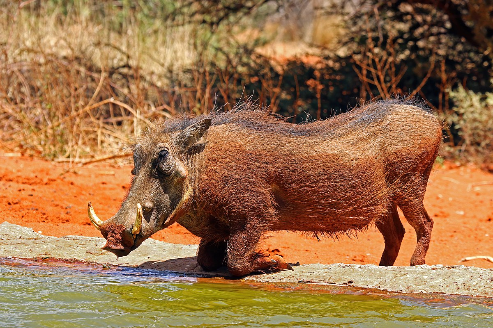

Warthog
The common warthog (Phacochoerus africanus) is a wild member of the pig family (Suidae).
The common warthog is a medium-sized species, with a head-and-body length ranging from 0.9 to 1.5 metres (2 feet 11 inches to 4 feet 11 inches), and shoulder height from 63.5 to 85 cm (2 ft 1 in to 2 ft 9 1⁄2 in). Females, at 45 to 75 kilograms (99 to 165 pounds), are typically slightly smaller and lighter in weight than males, at 60 to 150 kg (130 to 330 lb). A warthog is identifiable by the two pairs of tusks protruding from the mouth and curving upwards. The lower pair, which is far shorter than the upper pair, becomes razor-sharp by rubbing against the upper pair every time the mouth is opened and closed. The upper canine teeth can grow to 25.5 cm (10 in) long and have a wide elliptical cross section, being about 4.5 cm (1 3⁄4 in) deep and 2.5 cm (1 in) wide. A tusk will curve 90° or more from the root, and will not lie flat on a table, as it curves somewhat backwards as it grows. The tusks are not used for digging,[6] but are used for combat with other hogs, and in defense against predators – the lower set can inflict severe wounds.
WHERE WILL YOU FIND THEM
found in grassland, savanna, and woodland in sub-Saharan Africa.[1][2] In the past, it was commonly treated as a subspecies of P. aethiopicus, but today that scientific name is restricted to the desert warthog of northern Kenya, Somalia, and eastern Ethiopia.